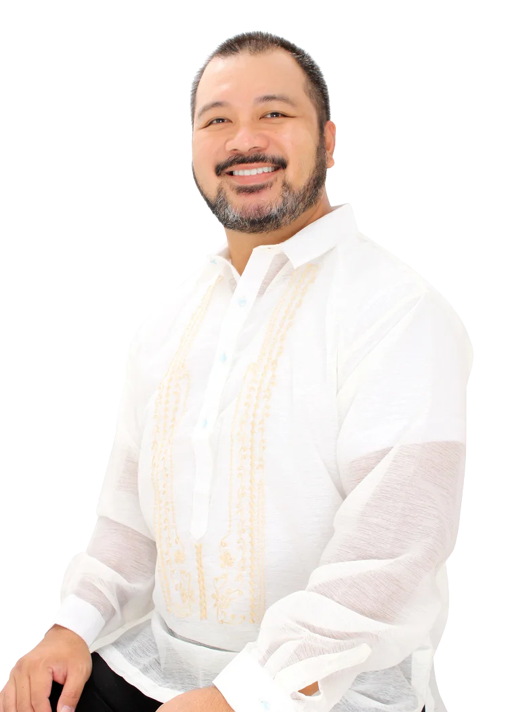

Fondintoj
VEDA Teĥnologioj, Ink.

Rommel MARTÍNEZ
Ĉefa Afergvida Oficisto | Ĉefa Sciencisto
Kunfondinto de VTI, Rommel gvidas produktan vidon kaj teknikan strategion kun fokuso al la kreado de altgradaj teknologioj.
Kun tridej jaroj de kombinita profesia sperto en pragramado, sistemaj administrado, kaj programlingvo teorio, li kunfandas lian teknikajn kapablojn kun his akumeno en gvidi tutmondklasa programara firmao.
Lia aktula esploro estas en komprenado de komputademismo, la menso, la scio, kaj rezonado. Li laboris antaŭe kun sciencistoj kaj inĝenieroj el CSL, ENST, MIT, and CMU.
Li estas poligloto kiu parolas kaj skribas en kvin lingvoj. En lia ŝpartempo, li ludas golfon kun lia edzino kaj ido, kaj partoprenas en pafadaj konkursoj.
D-rino Jeanne Marie Ciño MARTÍNEZ
Ĉefa Operaciaj Oficisto
Kunfondinto de VTI, D-rino Jem gvidas operaciojn, la partnerecojn, kaj la strategian kreskadajn iniciatoj.
Ŝi komencis ŝian gvidadan vojaĝon june kaj traktis diversajn kaj altgradajn estrajn rolojn ene ŝia denta profesio kaj multaj estimataj dentaj organizoj.
Ŝia vigla intereso en pragramado nutris fortan afinon por teknologio. Komplementi ŝian vastan sperton en organizada estrado, merkatada akumeno, financa scipovo, kaj kreema konceptigado, ŝi sinpozicias kiel valora akiro en elpensi strategiojn por la kresko de la firmao.
En ŝia ŝpartemo, ŝi engaĝiĝas en agadoj kiel ludi golfon kun ŝia edzo kaj ido. Krome, ŝi ĉasan ŝiajn interesojn en skribado, voĉaktorado, kaj grafika desegnado.